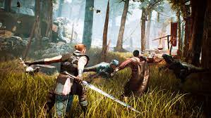

El Reino de Myrtana lucha una guerra casi desesperada contra los orcos. La única arma que Myrtana tiene contra ellos es el Mineral mágico, encontrado en las minas de la isla de Khorinis. Para juntar más Mineral, los criminales son enviados a las minas, incluso los condenados por delitos menores. El Rey Rhobar II (rey de Myrtana) llamó a los magos más poderosos del Imperio - 12 Magos en total (más tarde dividido en a los círculos de fuego y agua) - para crear una barrera mágica alrededor de la ciudad minera y así impedir a los prisioneros escapar. Pero algo perturbó la barrera mágica haciéndose más grande de lo esperado, aislando la colonia casi por completo. Los prisioneros mataron a los guardias, que fueron atrapados con ellos en la barrera mágica. Algunos de los prisioneros siguieron trabajando para el Rey en el Campamento viejo, conducido por Gómez, a cambio del alimento y otras comodidades no disponibles a otros. Un preso llamado Lee fundó el Campamento Nuevo, procurando destruir la barrera con la ayuda del los magos del agua. Y otro grupo unió el campamento del pantano bajo el mando de Y'Berion, confiando en un dios, al que llaman "Durmiente", en que les conducirá a la libertad. El Juego comienza con el Héroe sin nombre en la barrera mágica que pronto se hace amigo de Diego, una de las Sombras del Campamento Viejo. Después de que el Héroe se haya unido a un campamento, es enviado al Campamento de Pantano para ayudar un ritual que, como se supone, destruye la barrera. A lo largo del juego, y mientras aumentas de nivel y habilidades, descubres más cofradías, que dependen del campamento al que te uniste. La historia se desarrolla cuando los 12 magos son asesinados por Gómez (los asesinó nervioso porque la mina se derrumbó y ellos podrían causar problemas), entonces el Héroe tiene que ver a Xardas, quien le propondrá acabar con el Duermiente. Ya casi al final, cuando encuentres el templo orco, donde supuestamente está el Durmiente, el héroe lucha contra 5 seres sobrenaturales que tienen los corazones sagrados para destruir al dios. El Héroe encuentra un arma, que su supuesto dueño era un humano. Xardas lo manda a recargarle la energía con Milten, pero los magos del agua se enfadan porque usaron su mineral mágico para cargar la espada. Después, el Héroe regresa al templo para derrotar al último ser sobrenatural y luego pone los 5 corazones sagrados. Ahí se muestra un cutscene donde se derrumba el templo y se acaba con el Duermiente, destruyendo la barrera mágica.
Para volver pinchar aquí.